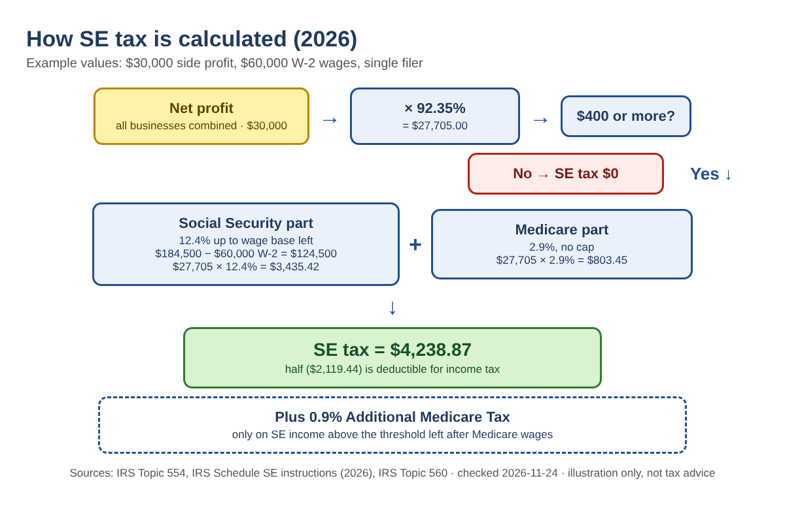
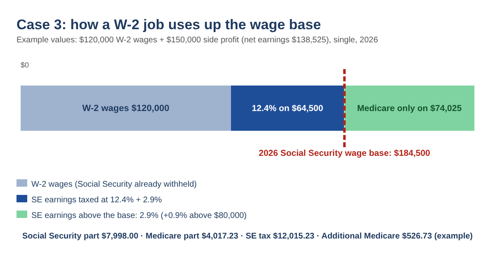
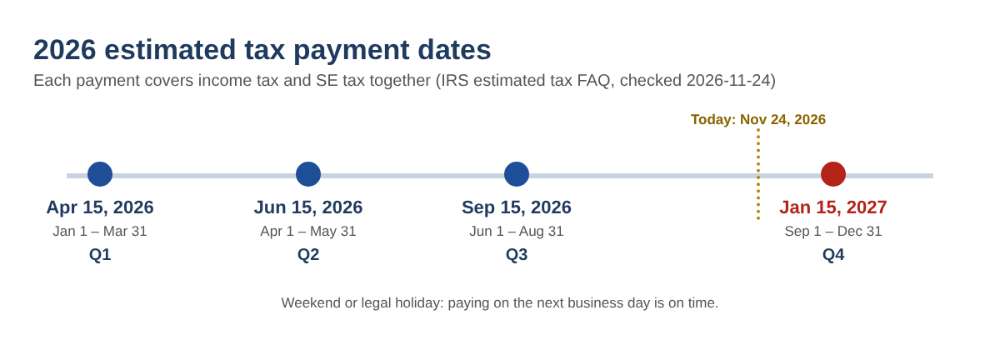

Self-Employment Tax in 2026: How to Estimate It Yourself (Even With a W-2 Job)
↓ Get the free Excel + PDF kit for this article
If you freelance, drive for an app, sell online or run a side business, your profit carries a second tax on top of income tax: self-employment (SE) tax. It is Social Security and Medicare for people who work for themselves, and it often surprises people who also have a W-2 job, because part of the math depends on how much their employer already withheld. With the last 2026 estimated payment due on January 15, 2027, late November is a good time to run the numbers.
This post is general educational information, not tax or legal advice; confirm your own situation with a licensed tax professional.
The rules in one minute
The IRS lists 12.4% for Social Security and 2.9% for Medicare, 15.3% combined. It generally applies to 92.35% of your net earnings from self-employment, and you usually must pay it when your net earnings are $400 or more. The Social Security part stops at a yearly wage base, which counts your W-2 wages and your self-employment earnings together. The Medicare part has no cap.
| Item | 2026 | 2027 |
|---|---|---|
| Social Security wage base (W-2 + SE combined) | $184,500 | $192,300 |
| Social Security part / Medicare part | 12.4% / 2.9% | 12.4% / 2.9% |
| Share of net profit that counts | 92.35% | 92.35% |
| Additional Medicare Tax on SE income above the threshold | 0.9% | 0.9% |
The 2027 wage base comes from the Social Security Administration's 2027 fact sheet. Other 2027 rules are assumed to stay the same here; check the 2027 IRS forms when they are released.

Step by step: estimate your own SE tax
- Add up your net profit from self-employment. Use profit after business expenses. If you have more than one business, Schedule SE generally works from the combined result, so a loss in one can offset profit in another.
- Multiply by 92.35%. This is your net earnings from self-employment. If the result is under $400, you generally have no SE tax. (A profit of about $433.14 reaches $400.)
- Find your W-2 Social Security wages. Add the Social Security wages and tips from every W-2. Leave it at zero if you have no job.
- Find the wage base left. Subtract those W-2 wages from the wage base ($184,500 for 2026). It can't go below zero.
- Social Security part: the smaller of step 2 or step 4, times 12.4%.
- Medicare part: step 2 times 2.9%, with no cap.
- SE tax = step 5 + step 6. Half of it is an adjustment that lowers your income tax, not your SE tax.
- Check the Additional Medicare Tax. Take your threshold ($200,000 single, head of household or qualifying surviving spouse; $250,000 married filing jointly; $125,000 married filing separately), subtract your W-2 Medicare wages and tips, and apply 0.9% to the part of step 2 above what is left. A self-employment loss is not used here.
To do this in Excel or Google Sheets, put net profit in B1, W-2 Social Security wages in B2, Medicare wages in B3, the wage base in B4 (184500) and your threshold in B5 (200000 for single). Then type:
- B6 net earnings: =IF(MAX(0,B1)*0.9235>=400, MAX(0,B1)*0.9235, 0)
- B7 Social Security part: =ROUND(MIN(B6, MAX(0,B4-B2))*0.124, 2)
- B8 Medicare part: =ROUND(B6*0.029, 2)
- B9 SE tax: =B7+B8
- B10 Additional Medicare: =ROUND(MAX(0, B6-MAX(0,B5-B3))*0.009, 2)
- B11 half-SE-tax deduction: =ROUND(B9/2, 2)
Three worked examples (example values, 2026)
| Example | Side gig + W-2 | Full-time freelancer | High earner + W-2 |
|---|---|---|---|
| Filing status | Single | Married filing jointly | Single |
| Net profit | $30,000 | $120,000 | $150,000 |
| W-2 wages (Social Security and Medicare) | $60,000 | none | $120,000 |
| Net earnings (× 92.35%) | $27,705.00 | $110,820.00 | $138,525.00 |
| Social Security part | $3,435.42 | $13,741.68 | $7,998.00 |
| Medicare part | $803.45 | $3,213.78 | $4,017.23 |
| SE tax | $4,238.87 | $16,955.46 | $12,015.23 |
| Additional Medicare Tax (0.9%) | $0.00 | $0.00 | $526.73 |
| Half-SE-tax deduction (income tax) | $2,119.44 | $8,477.73 | $6,007.62 |
In the third example, $120,000 of W-2 wages already used most of the $184,500 wage base, so only $64,500 of the $138,525 gets the 12.4% Social Security rate. The Additional Medicare threshold left for SE income is $200,000 − $120,000 = $80,000, so 0.9% applies to $58,525.

Two edge cases: a profit of exactly $400 gives $369.40 of net earnings, which is under $400, so no SE tax. And if W-2 wages are already above the wage base (say $190,000), only the 2.9% Medicare part, plus any 0.9% Additional Medicare Tax, applies to the side profit.
Set it aside each quarter
SE tax is paid together with income tax through estimated payments (or extra W-2 withholding). For 2026 income, the IRS due dates are April 15, June 15 and September 15, 2026, and January 15, 2027. If a date falls on a weekend or legal holiday, paying on the next business day counts as on time. A simple habit: after each quarter, run the numbers on your profit so far and move the difference into a separate savings account. Remember that income tax is extra.

Common mistakes
- Multiplying the whole profit by 15.3% and skipping the 92.35% step, which overstates the tax.
- Ignoring W-2 wages that already used part or all of the Social Security wage base.
- Thinking the half-SE-tax deduction lowers SE tax. It lowers income tax only.
- Using last year's wage base ($176,100 was the 2025 figure) for 2026.
- Saving only for income tax and forgetting SE tax, or the other way around.
- For married couples, combining both spouses' businesses into one calculation. SE tax is figured per person.
FAQ
Do I owe SE tax if I also have a full-time job?
Generally yes, if your self-employment net earnings are $400 or more. The W-2 job mainly affects the Social Security part: wages already counted toward the wage base reduce how much SE income gets the 12.4% rate.
What if my side business has a loss?
A net loss generally means no SE tax for that year, and the IRS says not to consider a self-employment loss for the Additional Medicare Tax. How a loss affects your income tax depends on your situation, so confirm it with a tax professional.
My spouse and I both freelance. Do we file one Schedule SE?
SE tax is figured for each person. When both spouses have self-employment income, each generally needs a separate Schedule SE. Confirm the setup for your business with a tax professional.
Are nonresident aliens subject to SE tax?
The Schedule SE instructions say a self-employed nonresident alien living in the US must pay SE tax if an international social security agreement in effect determines they are covered. Residency status is a legal test, so confirm yours with a licensed professional.
Year-end checklist
- ☐ Total your 2026 net profit from all businesses so far.
- ☐ Collect your W-2 Social Security and Medicare wages and tips (or your latest pay stub).
- ☐ Run the eight steps above, or the spreadsheet formulas.
- ☐ Compare the result with what you have already set aside or paid.
- ☐ Plan the January 15, 2027 payment, including income tax.
- ☐ For 2027, use the $192,300 wage base and check the 2027 IRS forms.
You can download the ready-made Self-Employment Tax Calculator 2026-2027 for free in the Free kit download box below (Excel + PDF guide, no sign-up).
Disclaimer: This article is for general educational purposes only and is not tax, legal or financial advice. It does not tell you what to file, and no result is guaranteed. Tax rules change and depend on your specific facts, and the examples use made-up numbers. Please confirm your own situation with a licensed tax professional before acting.
Sources
- IRS Topic No. 554, Self-employment tax — 확인일 2026-11-24
- IRS Instructions for Schedule SE (Form 1040) (2026) — 확인일 2026-11-24
- IRS Topic No. 560, Additional Medicare tax — 확인일 2026-11-24
- IRS Instructions for Form 8959 — 확인일 2026-11-24
- IRS Estimated tax FAQ (due dates) — 확인일 2026-11-24
- SSA Contribution and Benefit Base — 확인일 2026-11-24
- SSA 2027 COLA Fact Sheet — 확인일 2026-11-24
Free kit download
Tools to follow this article step by step. No sign-up needed.
- Excel workbook (.xlsx)SE_Tax_Calculator_2026_2027_EN.xlsx · 17 KB
- Step-by-step guide (PDF)SE_Tax_Guide_2026_2027_EN.pdf · 75 KB
Free to use for yourself and your own business; please do not resell or redistribute. General information, not tax, legal or accounting advice; check every figure against your own records.